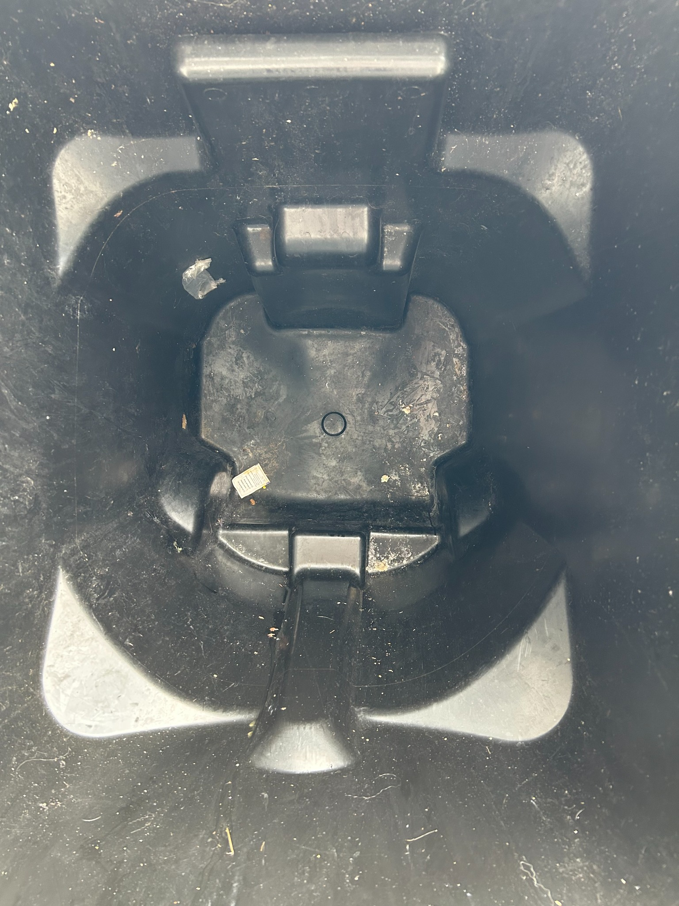
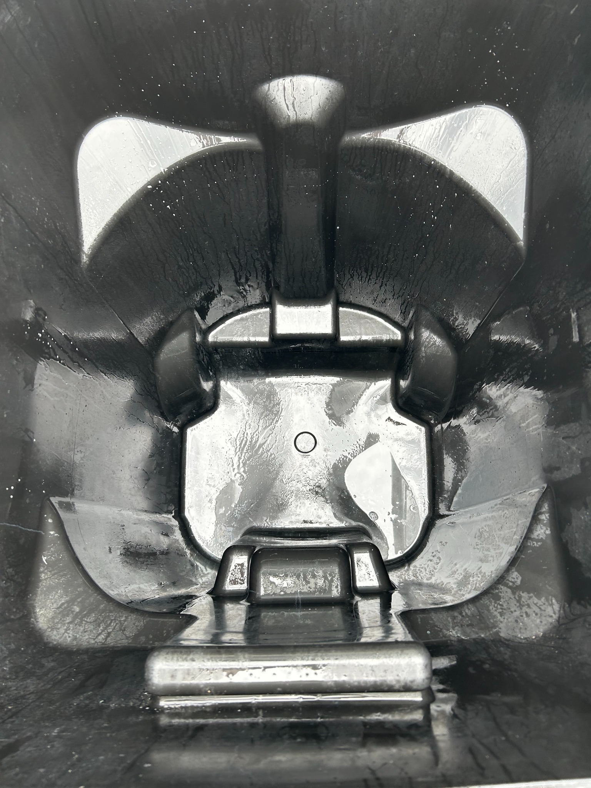
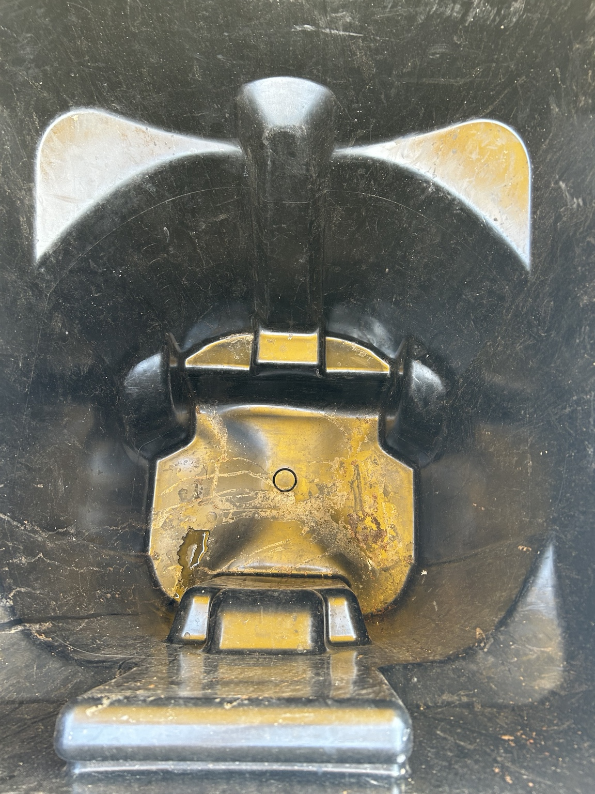
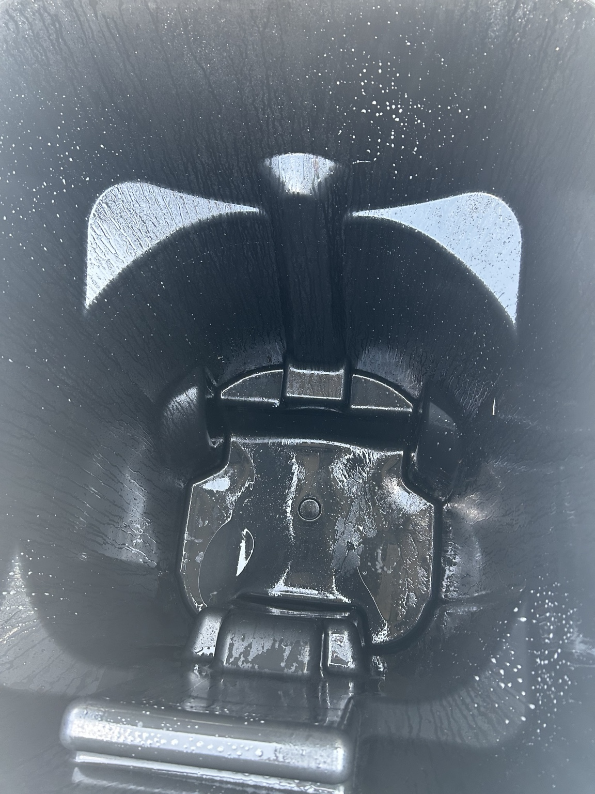
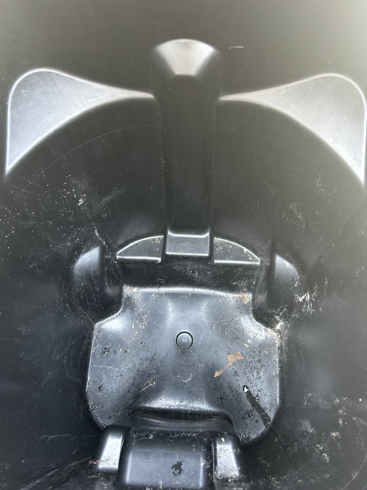
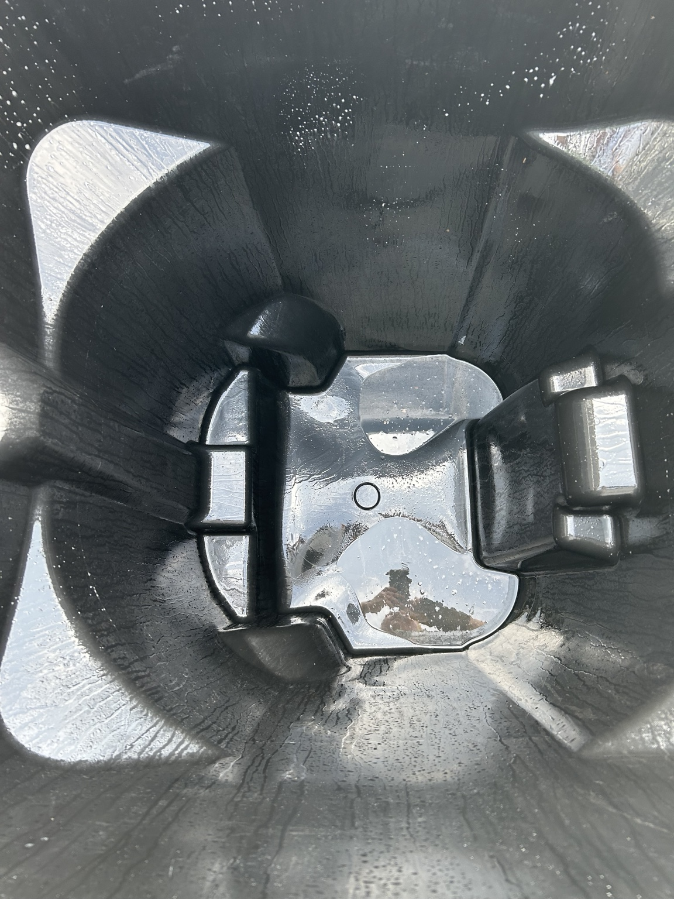

BEFOREBefore cleaning
Built-up grime and residue inside the bin.
Take a closer look at real before-and-after photos from Fresh Can Co. See the difference a proper bin cleaning can make.
Get your bins cleaned →Swipe through the photos and compare each bin before and after its cleaning.

BEFOREBuilt-up grime and residue inside the bin.

AFTERA freshly washed bin after service.

BEFOREAnother bin ready for a deep clean.

AFTERCleaned, rinsed and freshened up.

BEFOREReady for a Fresh Can Co. reset.

AFTERAnother bin looking fresh after service.